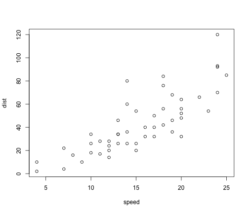

This is an R HTML document. When you click the Knit HTML button a web page will be generated that includes both content as well as the output of any embedded R code chunks within the document. You can embed an R code chunk like this:
summary(cars)
## speed dist ## Min. : 4.0 Min. : 2.00 ## 1st Qu.:12.0 1st Qu.: 26.00 ## Median :15.0 Median : 36.00 ## Mean :15.4 Mean : 42.98 ## 3rd Qu.:19.0 3rd Qu.: 56.00 ## Max. :25.0 Max. :120.00
You can also embed plots, for example:
